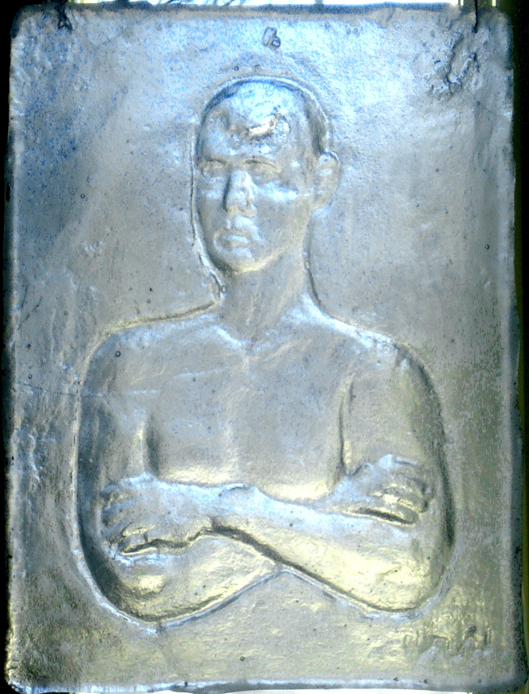

| Sama reliefi on valettu kahdesti.
Ensimmäisessä reliefi on etupinnassa, toisessa se on syvennyksenä takapinnassa. Valo taittuu näissä eri tavoin |
|
| The same relief is cast in two different ways. One is in front of the base sheet, the other is behind. The light is distributed in different ways. | |
| Pintareliefi Front relief |
|
| Taustareliefi Back relief |